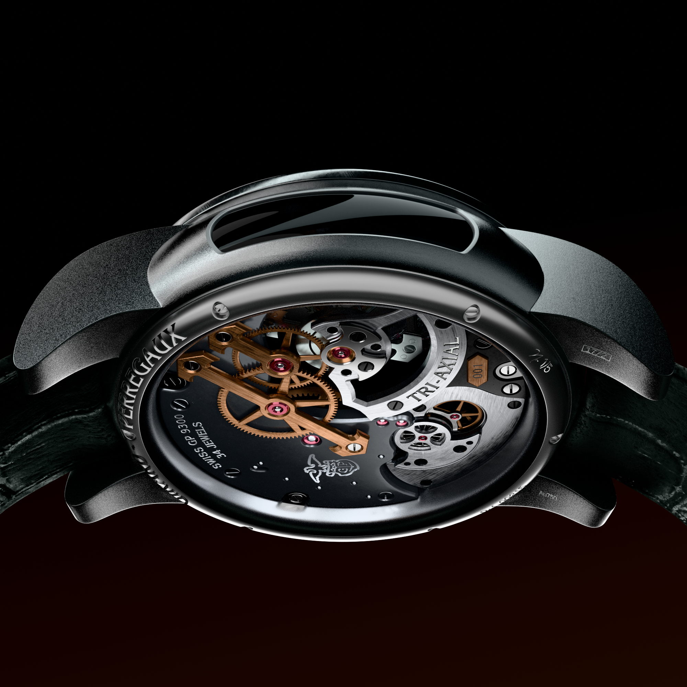
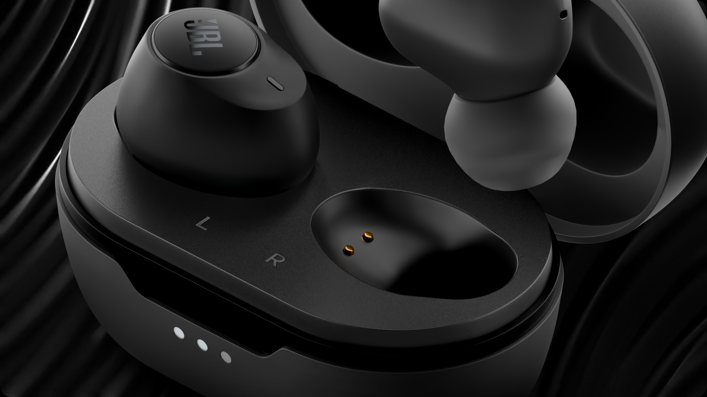
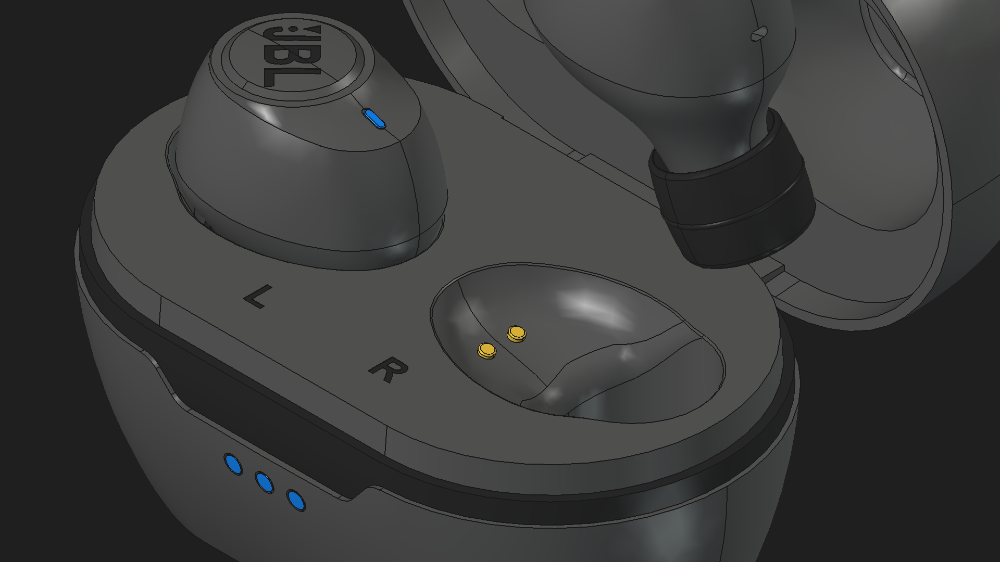
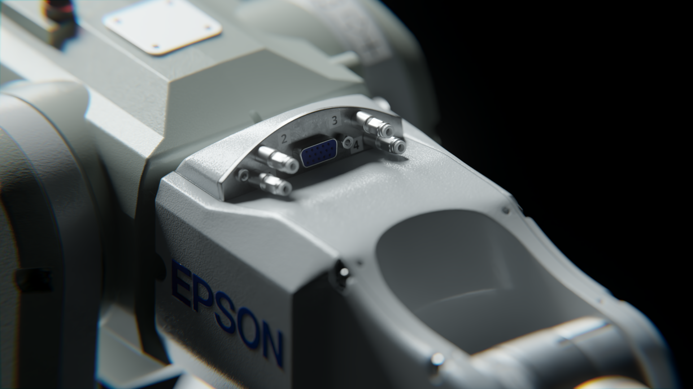
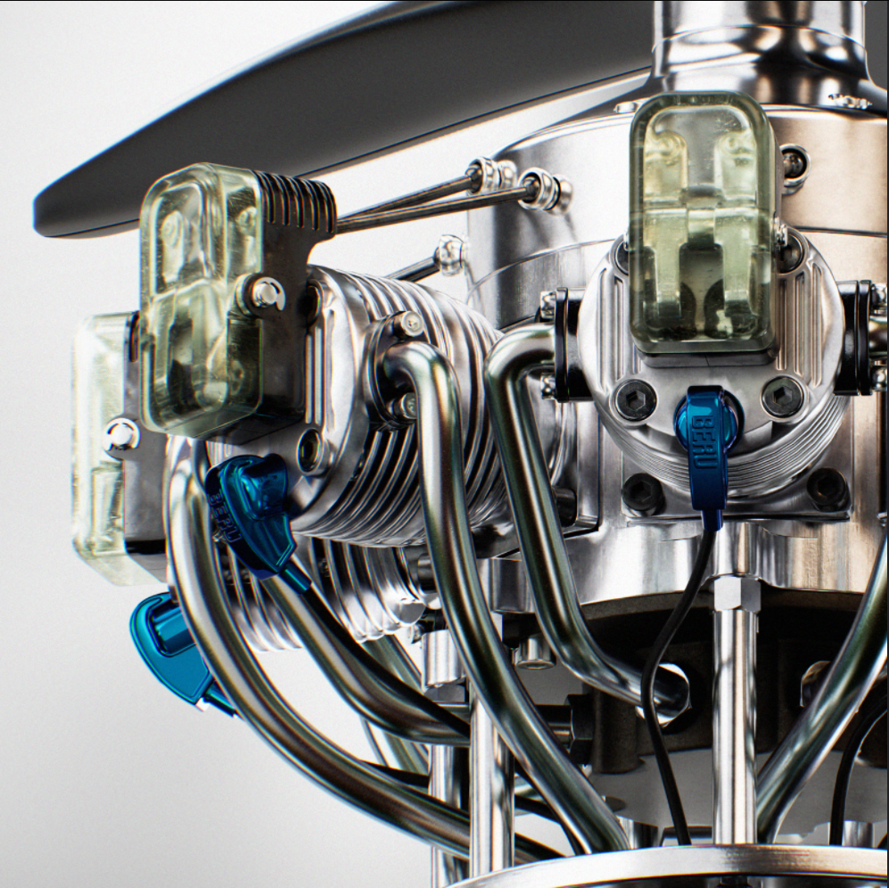

Horology
Girard perregaux tri-axial tourbillon watch
Mechanical movement animated & rendered with brushed titanium, ruby jewels, and glass refraction.
3D technical artist and CAD retopology specialist
Skip the prototype photo shoot. We clean up heavy CAD assemblies, build true-to-life materials, and render 4K stills and motion clips for investors, marketplaces, and launches.
Drag across the model to compare the raw CAD mesh with the finished studio render.


Engineering viewports are built for manufacturing, not marketing. We turn raw CAD files into visuals that sell the product.
Every project is different. Open one to see the details behind the work.

Mechanical movement animated & rendered with brushed titanium, ruby jewels, and glass refraction.

CAD-to-render pipeline of an Epson C4-A601S robot arm, featuring full mesh retopology, high-fidelity material mapping, and production rendering.

CAD-to-DCC reconstruction of a 7-cylinder radial engine with production-ready topology, textured mechanical surfaces, and an exploded animation rig.
Founder of VantricMotion, lead CAD visualization artist, and retopology specialist
“I bridge the gap between heavy, unpolished engineering CAD and high-end commercial visualization. With quad retopology, physically accurate materials, and studio lighting, I help hardware startups, designers, and engineers show their products in photoreal detail before manufacturing.”
We work with the standard engineering CAD suites.
Direct import from CAD and CAM software
Production-ready visual assets
Unreleased hardware stays private. Email your brief or CAD files and get an accurate quote within 24 hours.